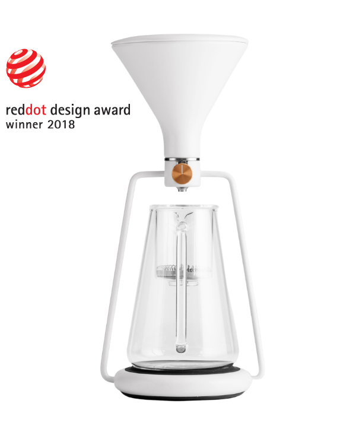
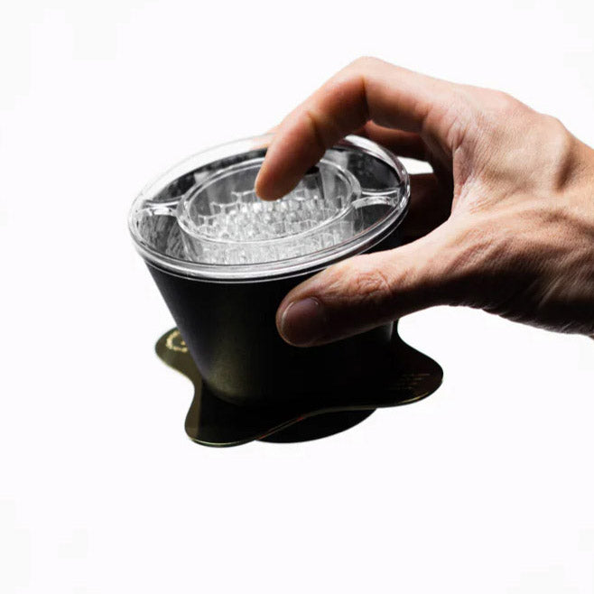
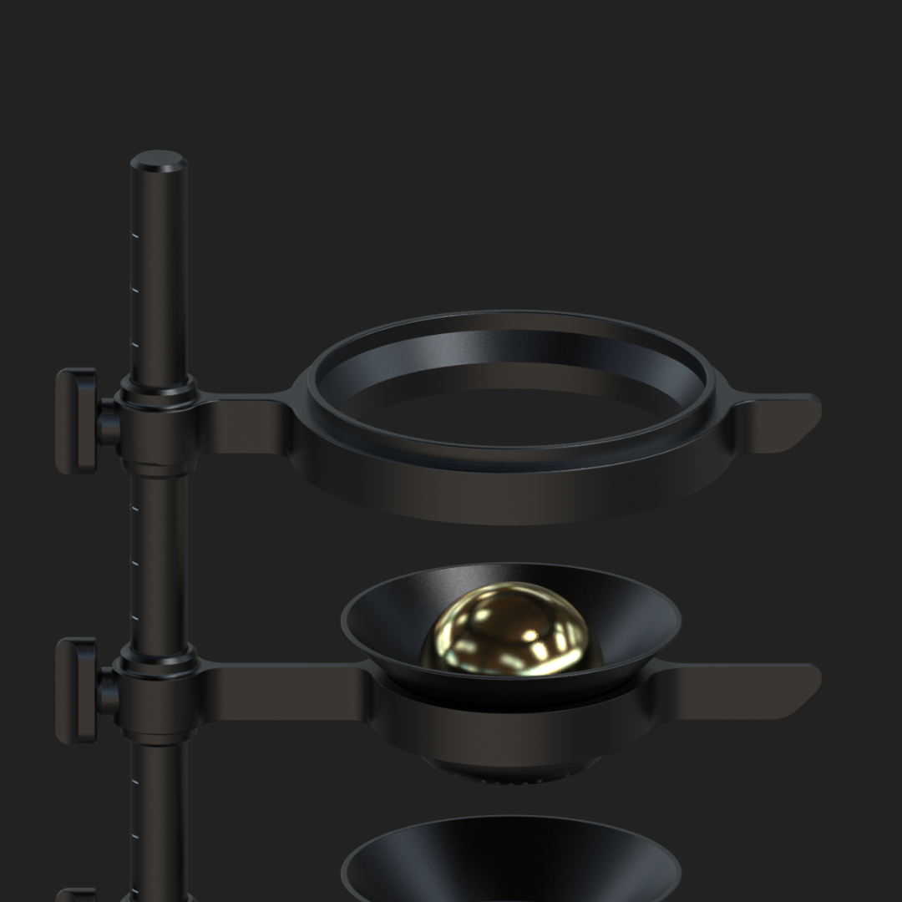
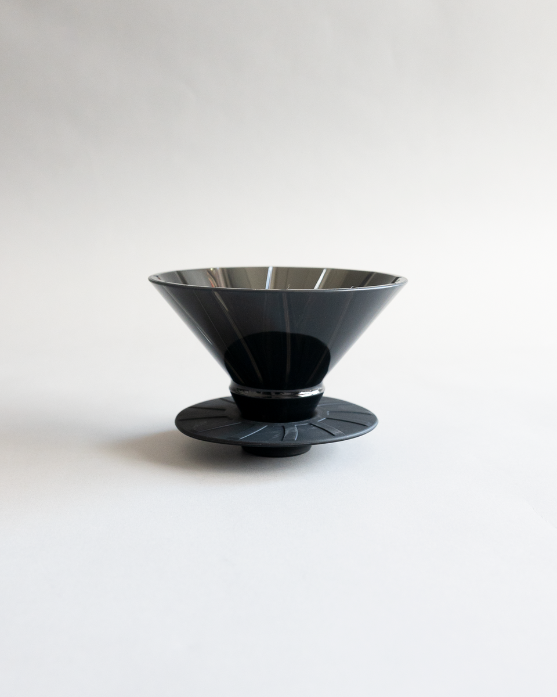

챔피언이 쓰면, 유행이 됩니다 최근 몇 년간 브루잉 대회가 만들어낸 도구와 기법들
스페셜티 커피 업계에서 새로운 도구가 퍼지는 경로는 대체로 비슷합니다. 월드 브루어스컵 결승 무대에 낯선 도구가 등장하고, 그 선수가 우승하거나 눈에 띄는 성적을 내면, 그 도구는 순식간에 전 세계 카페의 장비 리스트에 오릅니다.
최근 몇 년간 이런 식으로 이름을 알린 도구와 기법 네 가지를, 출시된 순서대로 정리했습니다.
슬로베니아 브랜드 Goat Story가 2016년 크라우드펀딩으로 선보인 도자기 브루어입니다. 하리오 V60과 클레버 드리퍼를 합쳐놓은 구조로, 밸브를 열고 닫아 드립(percolation)과 침출(immersion)을 한 도구에서 오갈 수 있는 것이 특징입니다. 2018 월드 브루어스컵 챔피언 에미 후카호리(일본 출신, 스위스 국가대표)가 이 도구를 사용해 우승하며 유명해졌습니다. 도자기 재질이라 온도가 잘 유지되고 밸브 조절이 정교해, 다루기 까다로운 로리나(Laurina) 품종 원두를 안정적으로 추출하는 데 유리했다고 밝혔습니다. 이후 몇 년간 하리오 스위치, April 등 '하이브리드 브루어'가 대회 상위권에 꾸준히 등장하는 흐름의 출발점이 된 도구이기도 합니다.

Orea는 런던에서 활동하는 루마니아 출신 디자이너 호리아(Horia)가 2020년 선보인 플랫베드 드리퍼로, 기존 플랫베드보다 더 과감한 각도와 배수 구조를 써서 유속을 빠르게 만든 것이 특징입니다. Melodrip은 물줄기를 가늘게 흩뿌려 커피 층에 고르게 떨어뜨리는 샤워기 형태의 보조 도구입니다. 2024 월드 브루어스컵 챔피언 마틴 뵐플(오스트리아)이 Orea V4(패스트 바텀)에 자신의 이름을 딴 'Orea Melodrip x MW'를 결합해 우승했고, 이 조합은 이후 여러 브랜드의 시그니처 상품으로도 이어졌습니다.

2015 월드 바리스타 챔피언십 우승자 샤샤 세스틱(호주, ONA Coffee)이 2023년 스페셜티커피협회(SCA) 엑스포에서 선보인 핸드드립 도구입니다. 2018년 취리히응용과학대학(ZHAW) 연구진과의 대화에서 '추출액을 급속 냉각하면 휘발성 향 성분이 더 많이 남는다'는 사실을 접한 뒤, 수년간의 공동 연구 끝에 냉각된 금속 돌(칠링 락)을 드리퍼 아래 받쳐 추출 초반 온도를 낮췄다가 이후 정상 온도로 전환하는 '칠 익스트랙트' 방식을 완성했습니다. 그해 SCA 베스트 뉴 프로덕트 어워드에 출품되기도 했습니다. 세스틱은 이후에도 여러 브루잉 도구를 선보이고 있는데, 저희 매장에서 쓰고 있는 에스프레소 분배 도구 NCD도 같은 그의 작품입니다.

Jay Kim과 Kenzie Chay가 만든 UFO 드리퍼는 80도 각도의 얕고 넓은 추출층이 특징입니다. 원래 Sibarist의 플랫 필터에 맞춰 설계됐다가 독립된 브루어로 발전했습니다. 2024년 사자커피(일본) 소속 와타루 이이다카 선수가 이 드리퍼로 월드 브루어스컵 2위에 오르며 처음 주목받았고, 2026년에는 말레이시아의 나스 자아파르(Nas Jaafar) 선수가 UFO V3 드리퍼와 하리오 스위치 베이스를 함께 써서 말레이시아 최초로 챔피언 자리에 올랐습니다. 파나마 게이샤 무산소 내추럴 원두를 사용했고, 유체가 다공성 물질을 통과하는 원리인 '다르시의 법칙'을 발표에 담아낸 것으로도 화제였습니다.

새로운 도구는 언제나 대회 무대에서 가장 먼저 시험대에 오릅니다.
대회에 새로운 도구가 자주 등장하는 이유는 간단합니다. 정해진 시간과 인원 앞에서 아주 작은 차이로 순위가 갈리기 때문에, 선수들은 남들이 쓰지 않는 도구로 그 틈을 만들어내려 합니다. 우승하면 그 도구는 곧바로 전 세계에 소개되는 무대를 얻습니다. 새로운 브루잉 도구의 흐름이 궁금하다면, 그 해의 브루어스컵과 바리스타 챔피언십을 지켜보는 것만큼 빠른 방법도 없을 것입니다.